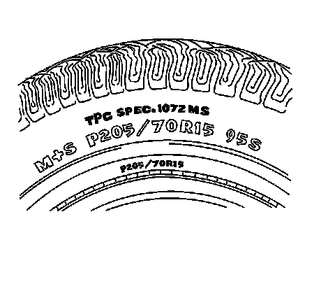

Tire and Wheel Inspection
Tire and Wheel Inspection
All Seasons Tires Description:

The tires on all new production models have a tire performance criteria (TPC) rating number molded on the sidewall. The TPC rating will appear as a 4-digit number preceded by the letters TPC SPEC on the tire wall near the tire size. A replacement tire should have the same TPC rating.
Tire Wear
Tire Wear:

1 - Hard Cornering/Underinflation
2 - Incorrect Alignment/Lack of Rotation
3 - Incorrect Alignment/Non-uniform Tire
4 - Heavy Acceleration/Over inflation
5 - Wear Indicator
Inspect the tire and wheel assemblies for the following conditions:
* Unusual wear such as cupping, flat spots, and/or heel-and-toe wear
These conditions can cause tire growl, tire howl, slapping noises, and/or vibrations throughout the vehicle.
* Proper inflation to specifications for the vehicle
* Bulges in the sidewalls
Do not confuse bulges, which are an abnormal condition, with normal ply splices which are commonly seen as indentations in the sidewall.
* Bent rim flanges